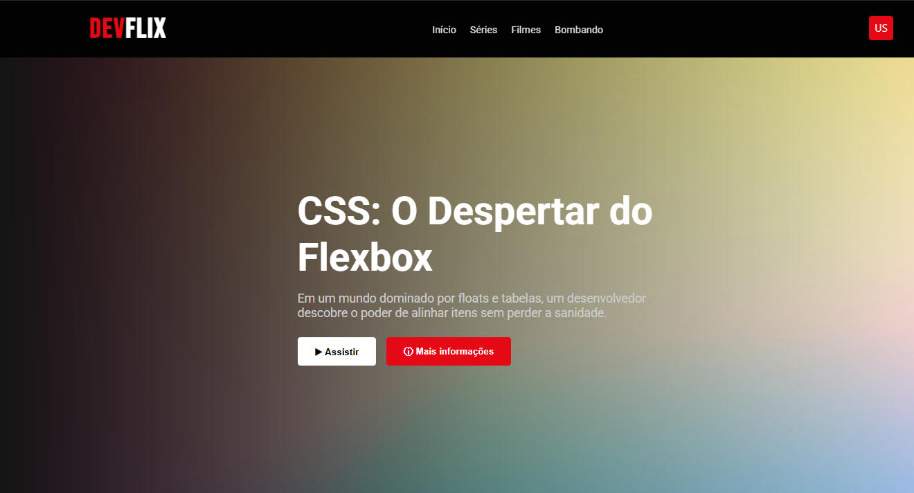
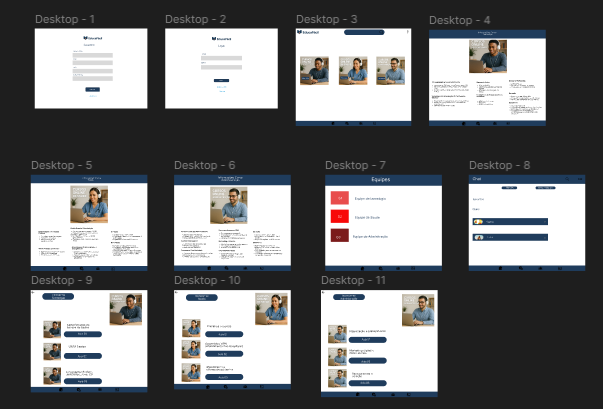

Projetos em Destaque

Devflix
Layout inspirado nas maiores plataformas de streaming, adaptado especificamente para cursos e trilhas educacionais de programação.

EducaNet
Protótipo completo de sistema educacional e plataforma de aprendizagem online com foco em facilidade de uso e navegação intuitiva.

Design Portfólio Futurista
Estrutura visual completa e estilização de website desenvolvida no Figma, explorando tipografia moderna, contraste neon e estética tech.

Sabor Digital
Layout de cardápio digital moderno projetado para otimizar pedidos online, com apresentação visual atrativa dos pratos e conversão rápida.